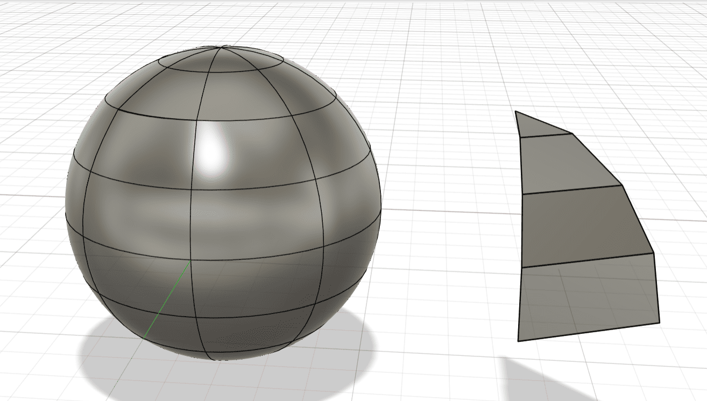
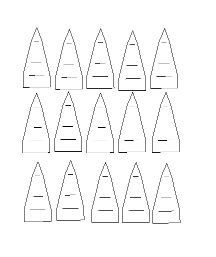

LASER CUTTING
Introduction
This assignment explores the complete digital fabrication pipeline using Autodesk Fusion 360 and laser cutting technology. The objective was to design a segmented 3D sphere, extract 2D projections in DXF format, and fabricate the model using laser cutting, followed by physical assembly of segments into a spherical form. It demonstrates how complex 3D geometries can be broken down into manufacturable parts using digital tools, and how precise 2D output can be transformed into accurate 3D structures through proper planning.
Step-by-Step Guide to Creating the 3D Model
1. Start a New Design
Launch Fusion 360 and start with a new design.
2. Create the Sphere (Main Body)
Go to Create → Sphere, select the center plane and set the diameter.
3. Segment the Sphere
Use Modify → Split Body to divide the sphere into parts.
4. Extract a Single Segment
Hide other segments and isolate one slice for export.
5. Mirror or Pattern the Segments
Use Create → Mirror to duplicate segments as needed.
6. Apply Thickness (Optional)
Use the Shell command for hollow shapes if required.
7. Add Refinements
Use Fillet and Chamfer tools for smoother edges.
2D Drawing with Dimensions
1. Open Drawing Workspace
Go to File → New Drawing → From Design.
2. Place Orthographic Views
Add front, top, and right side views.
3. Add Section and Detail Views
Use the Section View and Detail View features.
4. Dimensioning
Insert all critical dimensions for fabrication accuracy.
5. Export as DXF
Save the drawing and export as DXF for laser cutting.
Fabrication & Final Output
During Laser Cutting